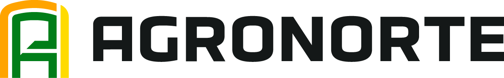

☰
Guía interna para entender al cliente ganadero y tambero antes de hablar de máquinas.
Basado en los módulos internos de Sistemas Productivos Ganaderos y en material de cátedra de Sistemas de Producción Animal: Bovinos (FCA-UNR, 2026).

← Volver al calendario
Agronorte
Inicio
![Agronorte]()